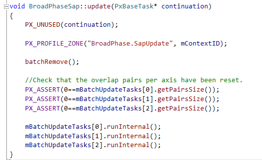
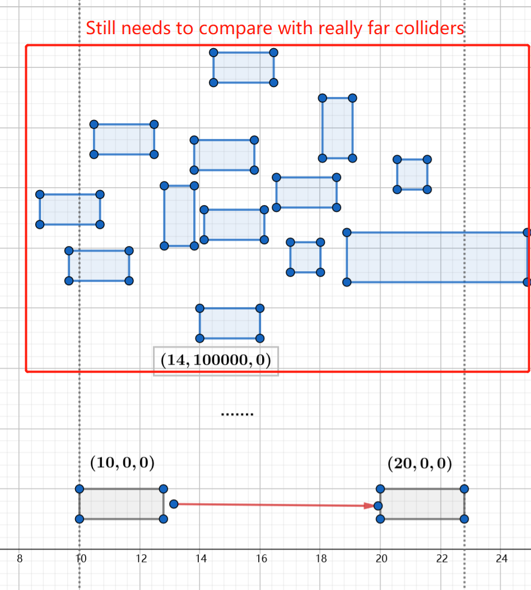
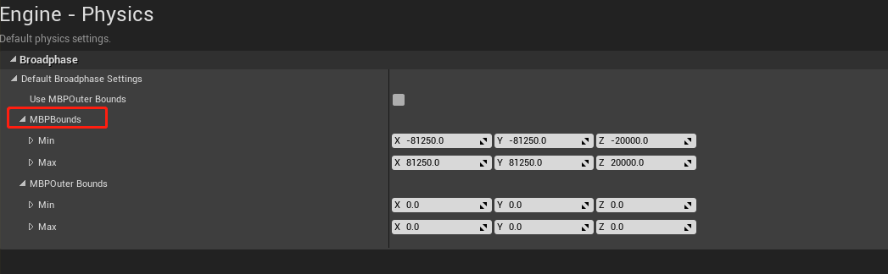
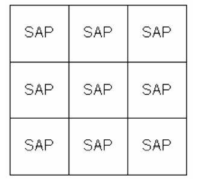
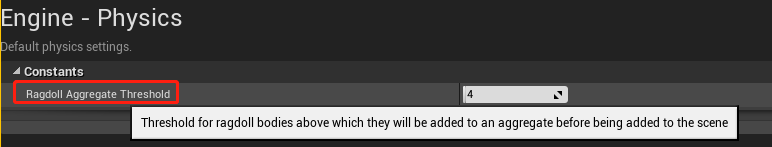
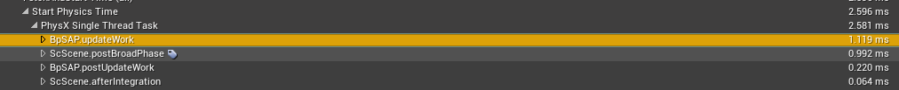
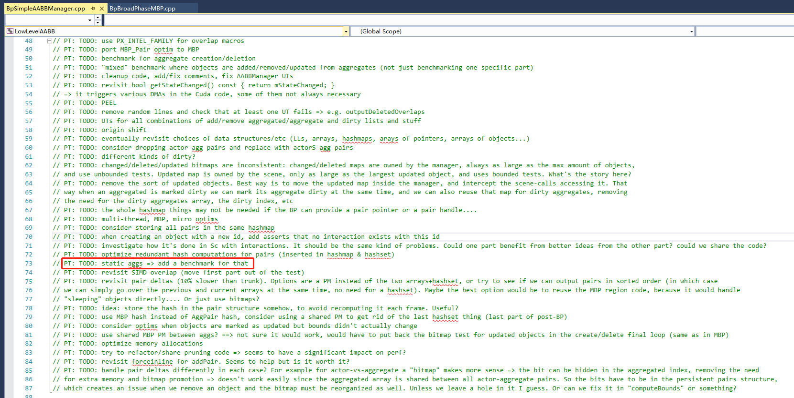

Introduction
The Broad Phase‘s Update function like BroadPhaseSAP::Update or BroadPhaseMBP::Updatecan cost lots of performance, especially when there are millions of rigid bodies or fast-moving rigid bodies in your scene.
And it is so common that the performance issue is even worse on a dedicated server because of PhysX‘s single-thread CPU-Dispatcher.
About Broad Phase
The Broad Phase‘s Update function is not always a performance hot-spot in most cases if you are not developing an open world game which contains lots of fast-moving objects.
PhysX has provided us two broad-phase algorithms: SAP and MBP. Both of them use AABB to detect collision.
The basic idea behind these algorithms is:
two AABBs overlap iff their projections on the X, Y and Z coordinate axes overlap.
That is to say, physX needs to keep three sorted arrays, one for each axis, to track the bounding box’s min and max value of each rigid body.
And since we can play with those rigid bodies by interfaces that UE4 has provided. As a result, physx needs to keep these arrays sorted–this is exactly what Broad Phase‘s Update function does.

This function is called in the TG_StartPhysics tick group. After all those three tasks are completed, we’ve managed to get a sorted array for each axis.
Something About Sorting
It is known to all that we should choose different sorting algorithm for different cases.
Instead of iterating the whole array, it would be a better choice to update only part of the array if number updated is sufficiently fewer than number of whole boxes. And this is how PhysX handle it:
1 | void BroadPhaseSap::batchUpdate |
Moreover, QSort is used if the updated box is fewer than 512. Or else, Bucket Sort is used:
1 |
|
Issue Cause
Time to investigate what on earth eventually cause this issue.
After millions of AABB projecting them self onto three axis, we can eventually get three extremely dense arrays.
Think about a moving rigid body moving from (10, 0, 0) to (20, 0, 0). During sorting stage, it would be compared with colliders far far away:

This leads to a large array sorting problem, a common but expensive problem.
How To Solve This Problem?
Level Streaming
One common solution to this issue for non-server build is to streaming in or out those colliders dynamically. This method works really well since it leads to a much smaller array for each axis.
This is a widely known solution so that I am not going to talk about its detail here since Epic has already provided tons of tutorials about it.
Multi Pruning Box
Also know as MBP algorithm. To use this algorithm, a level bound is needed. And you can set this value in the project setting:

In general, MBP simply divides the whole physics world into several regions:

Thus interactions between far aways objects are skipped because they are not likely in the same SAP region. On the other hand, parallel computing can be used to boost performance.
After all regions finish their updating task, found/lost pairs, compared to previous frame, is generated in its PostUpdate stage. What worth to be mentioned is that there is significant performance cost here since pushback and remove operations are called to BroadPhaseMBP.mCreated and BroadPhaseMBP.mDeleted array.
In conclusion, MBP can save Broad Phase performance if the physics world is large enough. But since PostUpdatecosts some performance, MBP can be more expensive than SAP when the scene is small or there is few moving object in the scene.
Aggregate
Aggregate Introduction
Aside from dividing the whole scene into several regions, there is another way to save performance by putting some rigid bodies into one single aggregate to reducing the array size.
A typical usage of aggregate is ragdoll. As we all know, a moving object is terribly expensive, not to mention a set of ragdoll, which is composed of a variety of simulating bones.
Thus it is pretty obvious that we can put those bone rigid bodies into one single aggregate, which has only one entry during Broad Phase stage. It is even more efficient if collision detection is ignored among these rigid bodies.
For the moment, or maybe forever, UE4 use aggregate with physics asset of a skeletal mesh. An configurable value is provided in the project settings to determine when to use aggregate, 4 by default:

If there are more than 4 rigid bodies in a physics asset, an aggregate would be created to hold real rigid bodies.
It is an optional optimization to use aggregate for a moving static mesh actor/component. And frankly speaking we’ve managed to achieve this feature in our customized engine. It’s fairly easy to implement and I sincerely suggest you try it.
Aggregate Side Effect
There are several side effects about aggregate if you dive into physx source code. Two major issues are covered here.
Aggregate Pair Issue
A noticeable performance hot-spot called ScScene.PostBroadPhase would pop up if a large amount of aggregates are inserted into physics scene:

After getting some more detailed profiling data by PVD, we’ve found that it is SimpleAABBManager::postBroadPhase - process actor-aggregate pairs that has eaten up more than 70% performance:
1 | { |
Strange enough, huh? It shouldn’t be so expensive. Let’s check processAggregatePairs out:
1 | static void processAggregatePairs(AggPairMap& map, SimpleAABBManager& manager) |
Uh-huh… There you are! TODO!
As a result, all existing aggregate pairs, both actor-aggregate pairs or aggregate-aggregate pairs, are fully iterated, even if most of those pairs are not updated.
So, it is not recommended to have too many aggregates in our scene.
Static Aggregate Issue
It firstly comes to my mind that we can put all rigid bodies of a Static Mesh Actor into an aggregate, like rigid bodies in a tree, a desk or even a building. In this way we can greatly optimize performance in BpSAP.updateWork or BpMBP.updateWork.
It works, though. updateWork function is greatly optimized. But it turned out that ScScene.PostBroadPhase has cost too much CPU resources. Sometimes we get a NEGATIVE OPTIMIZATION.
And yet btw, PhysX doesn’t have a benchmark for static aggregates. In my opinion, just don’t use aggregate for static mesh components:

A Deeper Thought
In the old days, broad phase was hardly ever a performance hot-spot because we might not have too many rigid bodies in our scene.
However, as the number of bodies grows, it becomes more and more expensive to handle those arrays. So it might be necessary for us to decline the number of rigid bodies, even if it can sometimes seem ridiculous for some ordinary cases.
For example, you may think a triangle mesh collider is really expensive in any case. But for an open world game, a triangle mesh collider is preferred because of saving a considerable amount of rigid bodies.